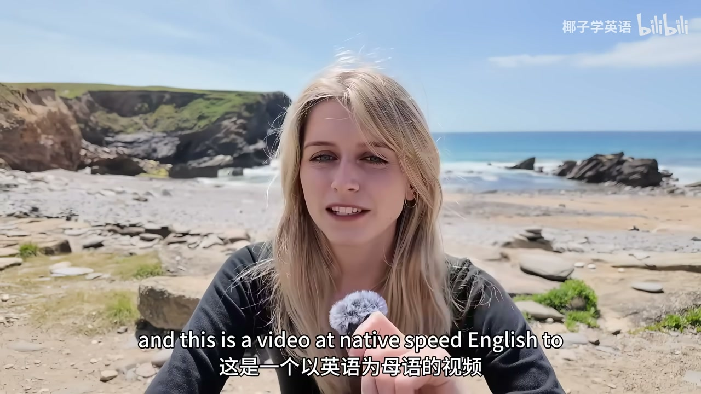
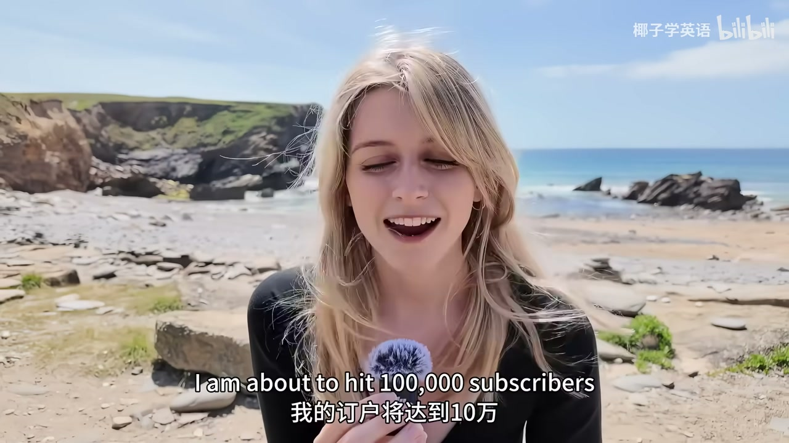
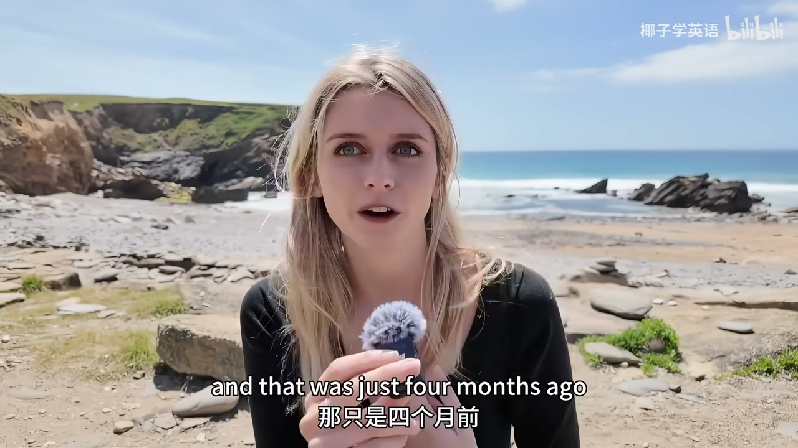
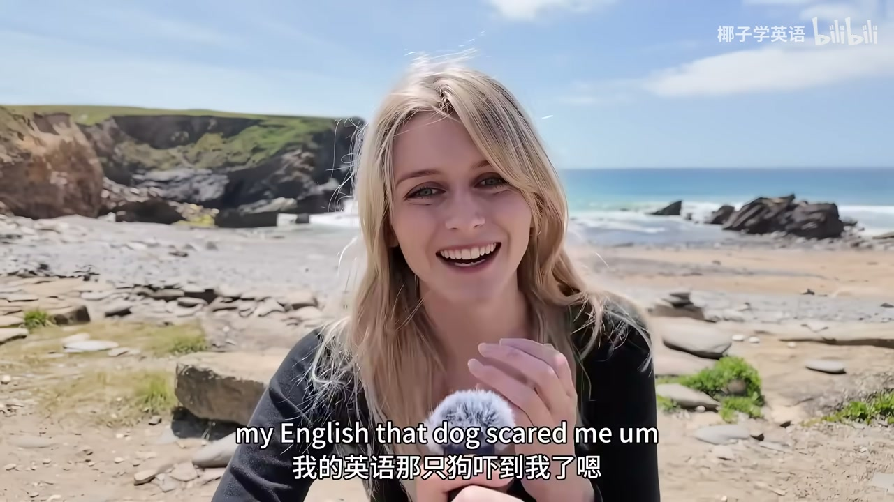
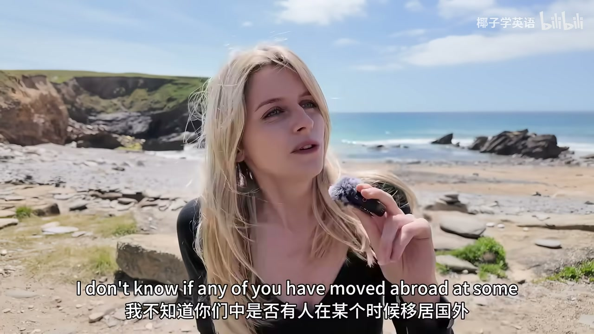
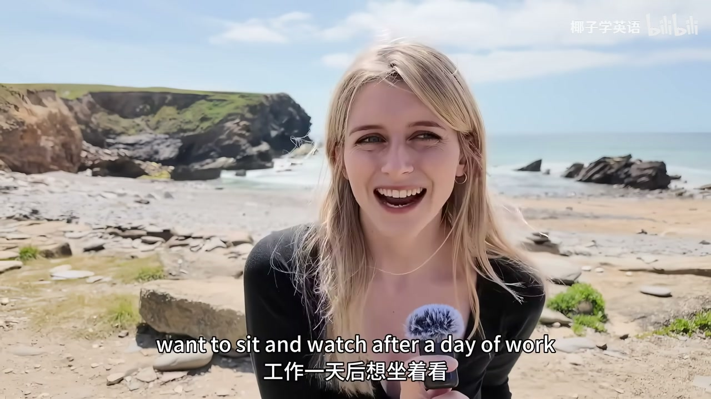
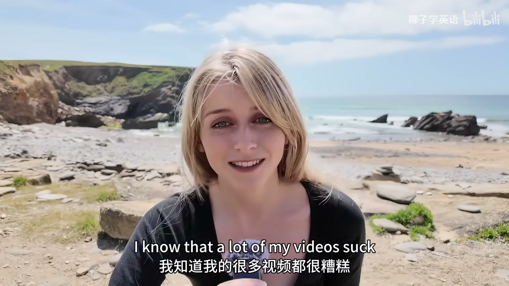

内容要点
English with Evie 约 8 分 35 秒「十万订阅特辑」：全程偏母语语速，主题是对高级学习者 vs 母语者的话语差异、如何用真人秀/喜剧补文化听力，以及频道「让英语进入生活」的定位。标题「慢速英语学习与频道心得」偏概括；成片明确说这是 native speed 挑战。ASR 英文整体可用。
知识结构
母语语速自测；四个月从紧张到放松。
选词/俚语/讽刺；群聊掉档；真人秀→喜剧路径。
沉浸替换日常习惯；做想看的内容而非词表课。
高级之后要练的是文化闲聊听力；材料选「母语者彼此交谈」的真实语流。
00:00–03:00母语语速与选词
她说明这是给听力的 native-speed 练习，并回顾开频道四个月。核心观察：对 C1/C2 学习者仍会改词——少重俚语、少堆习语与干讽；对英式母语朋友则更 banter。




03:00–06:00文化听力路径
一对一还行，一进酒吧群聊听力就掉：缺的是文化与玩笑背景。建议看不改词的真人秀练闲聊，再上喜剧练「听懂笑点」。

06:00–08:35频道定位与致谢
她不想只做超市认词课，而希望英语替换日常观看习惯，做下班也想看的 Vlog 风内容。感谢快速涨粉并邀请评论「听懂多少」。


完整转录
Hello, my name is Evie and this is a video at NativeSpeed English to help you practice your listening comprehension.
Feels funny to say that at normal speed but this is the 100,000 subscriber special so I thought maybe I should mix it up a little bit.
Yeah, this is going to be 8 minutes of me speaking at native speed.
I would love to know how much you can understand so watch the whole thing and comment down below if you could understand me or not.
So, I am making this video because I am about to hit 100,000 subscribers.
I am about 1,000 away right now but I wanted this video to be filmed and ready so that I could upload it.
Upload it for when I hit 100k because that is so freaking cool.
I have been running my channel now for about 4 months.I think it is actually 4 months today since my first upload.
And this is the exact beach that I filmed in my very very first vlog.
And I was so nervous.I was so nervous in that video.I was like my voice was shaking and I had to keep retaking the video because I was so scared.
And that was just 4 months ago so it feels pretty cool to be here now and hopefully I come across a little bit more relaxed.
In this video I wanted to talk about a couple of things.
One, I wanted to speak about the difference between how I speak to an advanced English learner and how I speak to a native.
And I wanted to speak a little bit about the future of this channel as well.So, you know, see if you can follow it.
So, the first thing I wanted to talk about was the difference between the way I speak to an advanced English learner and the way I speak to a native because these are actually two different things.
When I speak to an advanced English speaker, like even somebody who's like C1, C2, they're basically fluent, they can work in English, I do still change my language.
Even when I've made friends with people from other countries, my English is completely different.Oh Christ, that dog scared me.
My English is completely different compared to how I would speak with a native speaker.
And the main difference is not necessarily the speed, but like the words that I choose and the words that I use.
So, when I speak to an advanced English speaker, I will avoid like really heavy slang.I'll avoid heavy slang.
I'll avoid using too many expressions or colloquialisms or kind of leaning too much into the sarcasm.
For example, like if I'm speaking to another Brit, I will literally be like, shut up.
I'll just be like, you're banter, like your Brits are very sarcastic.We're very dry.Like we like to take the piss out of each other.
Sometimes I speak to like my advanced students and they might even find this video a bit difficult because I'm speaking faster and I'm using more specific words and phrases in here as well.
Now, I don't know if any of you have moved abroad at some point in your life to an English speaking country,
because I think this is one of the main times that people really feel that difference between an advanced English speaker and a native speaker.
In particular, if you make friends with natives, it's fine when you're one-on-one,
but the minute that you end up going into like a bar or a group or like a big social event where there's lots of natives who are speaking to each other,
that's actually when a lot of people find that their listening comprehension drops a lot, even though they're like C1 speakers, like super advanced speakers, B2C1.
And the biggest problem there is a lack of cultural understanding.
You need to understand like the jokes and the culture and the background of the country that you're in,
I think, in order to necessarily like pick up on the jokes, on the intonation, on the kind of banter that goes back and forth between people.
And I think the UK is particularly bad for this because we're very dry.We're very sarcastic, like I said.
So my advice for people who struggle with this or if you are like an advanced speaker,
maybe my videos are too slow for you or you want something more challenging, you need to watch reality TV.
And I know it's not for everyone like people don't always enjoy reality TV like dating shows,
but they are so important to watch because that is one of the only times that you will hear natives speaking to each other,
particularly in these like small talkie getting to know each other context without having like their language changed at all.
So watch reality TV.If you want to be like conversational, making friends in English, watch reality TV.
No subtitles.You already know the drill.If there's like a word or a phrase that you don't get, then just turn them on them.
So that would be my advice.If you want to make friends or if you're trying to go from that kind of advanced to like kind of native,
level like banter, watch reality TV.Once you're comfortable with that,
then start watching comedies because that will give you like the kind of cultural understanding to if you can get the joke,
you're going to be fine.You're going to be like C2.No worries.Okay.It's now about six minutes.
So I want to talk a little bit for the last couple minutes here.
Just kind of reflect on my channel and everything that's gone on in the last few months.
So I started this back in January because I noticed that a lot of videos that help you learn English are very educational.
And by that I mean and there's nothing wrong with this.
Okay.If you're a creator that does this or you like channels that do this,
I noticed that they do a lot of stuff like, oh, let's go to a supermarket and I'm going to like tell you what all of these words are.
And that's fine.And it's very useful.Right.You need that sort of content.
But I am of the opinion that if you want amazing English or to learn any language,
it needs to become a part of your life.If you need to be every single morning,
watching whatever you would normally watch in Spanish or Korean or Portuguese,
you need to be watching that in English.And as soon as you start like replacing all of your habits with habits in English,
your fluency is going to go through the roof.Like because your brain needs to be kind of immersed.It's immersed.
Sorry.It's like this kind of immersion.So, you know,
I wanted to make content that you would actually want to sit and watch after a day of work.
Like at least for me, when I finish work, I like watching vlogs or I like watching lifestyle content.That's just me.
So I try to make content like that in English, but just for people who are learning.
And that was kind of my idea behind behind my channel.And you know,
that's why I've not done any like vocabulary builder videos or anything like this.
I'm more trying to make native content that's accessible basically.
And you know, I'm trying to make one video a week at the minute.So I just don't have time to do anything else at the moment.
But yeah, in the future, it would be great to do a little bit more.I have lots of plans for the future.
I'll keep them quiet for now because I don't know if I can pull them off.But I just really wanted to say thanks to you guys.
I mean, this has been really, really quick growth for months.And I know that a lot of my videos suck, but they're getting better.
I try and make every video a little bit better than the last.And I hope you can see that and you can feel that.
And I just really appreciate your patience and all of your comments and all of your support.It really means a lot to me.
And you know, just thanks so much for watching and for subscribing and for getting me to 100,000 subscribers.How much could you understand?Let me know.
But that is everything from me today.And I will see you in the next video.Bye.